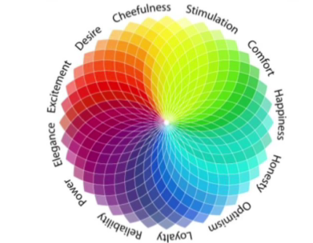

Introducing Chromolyzer, a revolutionary project that transcends the boundaries of traditional personality analysis by delving deep into the intricate world of colors. We believe that the hues surrounding us hold the power to evoke emotions, shape perceptions, and reveal the essence of our personalities. At Chromolyzer, we have meticulously explored the profound impact of colors on human psychology and emotions. Our project is grounded in the understanding that each color carries a unique energy, capable of triggering specific feelings and responses The essence of Chromolyzer lies in its innovative approach to personality analysis. By harnessing the insights drawn from the emotional spectrum of colors, we construct a nuanced and personalized portrait of individuals. Our proprietary methodology seamlessly integrates the principles of fuzzy logic, allowing us to navigate the subtle nuances of human emotions with precision and depth.
Chromolyzer has its origin in relational psychology. A International spiritual leader and relational psychologist Teal Swan proposed how to play a relational psychology game called “The Three Questions Game”. Teal Swan described this game/experiment as a window into our subconscious mind. The experiment involves user/ subject answering three min questions with detailed reason for his/her choice.
Because of the high correlation between RGB color space attributes and their failure to replicate human color perception, other
color spaces, such as HS* (HSL, HSI, HSV), are favored for modeling human color perception.Three attributes—hue (H, such as yellow,
cyan, or blue), intensity (I, pale vs. dark), and saturation (S, saturated vs. dull)—are used in the HSI paradigm to express colors.
As a result, it is more in line with how colors are perceived by the human visual system, which is predicated on three
interpretations of color: brightness, purity, and category. All three interpretations perfectly correspond to HSI. The Hue describes
the color in terms of an angle between 0 and 360 degrees. The Saturation describes how much the color is mixed with light, with a
range between 0 and 100. The Intensity component ranges from 0 to 255, where 0 represents black and 255 represents white.
Understanding that intensity and saturation in color are intricately tied to the interplay of lightness and darkness with the pure
colors, known as hues, is crucial. Chromolyzer addresses the challenge of ambiguity arising from the various shades and tints of
colors, which significantly influence the thoughts and emotions triggered in the user's mind. Consequently, Chromolyzer focuses
solely on hues, employing an algorithm to interpolate emotions and assess your personality without the complications introduced by
the nuances of shades and tints.
Personality, emotions, and colors share a dynamic connection that has intrigued psychologists, artists, and individuals alike. The study of color psychology delves into the ways in which different colors can influence and reflect aspects of one's personality and emotions. Opinions on the relationship between personality, emotions, and colors can vary widely. Some may find comfort and inspiration in specific colors, while others may associate certain hues with negative experiences. Cultural and individual differences contribute to the subjectivity of color perception.Exploring one's own relationship with colors and understanding the impact of color choices on emotions and personality can be a reflective and enlightening journey. Ultimately, the intricate interplay between personality, emotions, and colors adds depth to the human experience, offering a canvas of expression and self-discovery.
